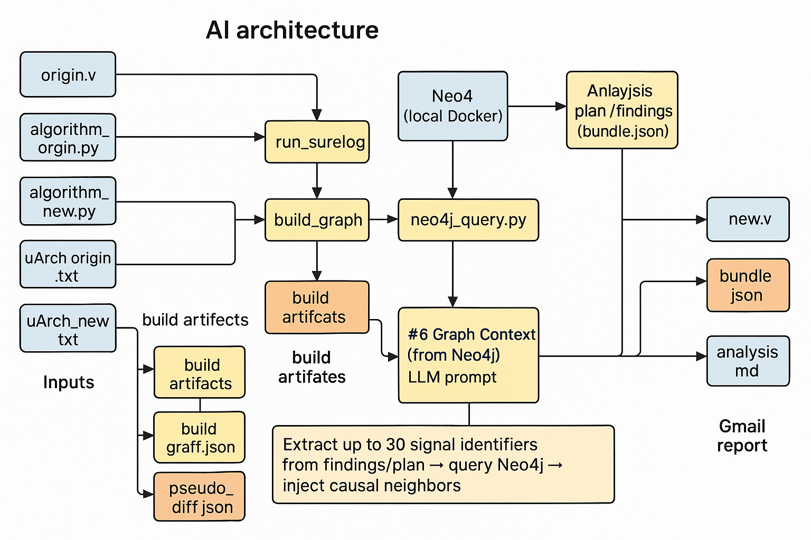

openai-image-gen
Output: /Users/vegitime/.openclaw/workspace/projects/rtl-ai-agent/docs/figures/ai-renderings/architecture-neo4j-context

Detailed RTL AI architecture (current state, Neo4j inference ready). Show swim-lane style diagram: inputs (origin.v, algorithm_origin.py, algorithm_new.py, uArch_origin.txt, uArch_new.txt) → run_surelog → uhdm_extract → build_graph producing build artifacts (rtl_ast.json, causal_graph.json, pseudo_diff.json). neo4j_ingest sends causal_graph.json to Neo4j (local Docker). A new module 'neo4j_query.py' pulls graph context, while 'Analysis plan / findings (bundle.json, pseudo diff)' and 'rag.db (SQLite RAG)' feed orchestrator/flow.py. Within orchestrator, highlight text block '## Graph Context (from Neo4j)' prepended to the LLM prompt. Add note: 'Extract up to 30 signal identifiers from findings/plan → query Neo4j → inject causal neighbors'. Outputs: new.v, bundle.json, analysis.md → Gmail report. Clean English labels, engineering colors, emphasize Neo4j active inference.
{kind=link}